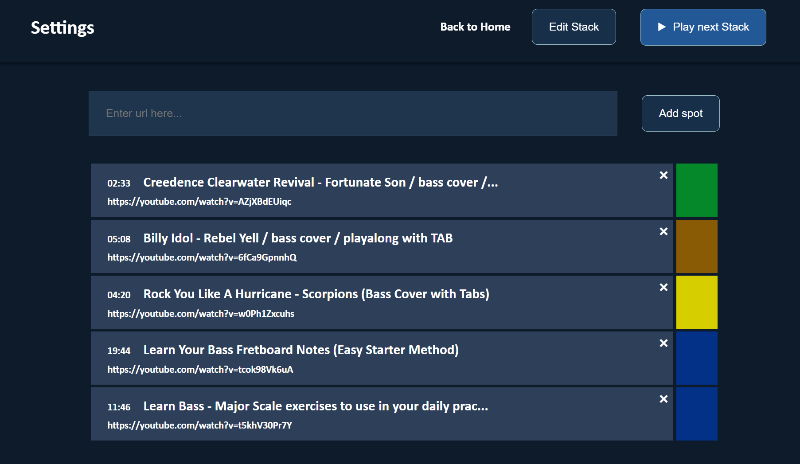

Welcome to Practice Stacks
This is a free tool that has been created to allow for a more impactful practice session. Here is how it works.
Overview
Create Spots
You enter in a list of practice youtube videos for anything you want to pracice. In this case we are using bass guitar practice videos. You then designate each video a color category.
Create your Practice Stack
Specify by color the order you want the categories to be played in. The system will then serve up a random selection of the spots you entered IN the category order you set in the stack.
Play your Practice Stack
Every day, you can come back to Practice Stacks and press the “Play next Stack” button and be served a new and random assortment of the spots you identified in the order you set. Example stack: Play 2 warm up scale practices, play 4 songs, then play 2 technique videos. The options are endless.
Enjoy a new Practice Stack every day
The videos will be shuffled new each time.
Step by Step
The first time you log in, it will ask you to enter your name. Enter any name and press the “set name” button.
It will now remember your name for future sessions. Click the settings link to begin using the site.

Now enter a url for your favorite practice youtube video and click add spot.
You have now entered your first spot. By default it gets the color “blue” assigned to it.
You can add more videos and catgorize them into different colors. In this example, I have marked warm up videos as blue and song practice as green. You can come back to this and continue to add or remove sopts whenever you want. Next click the “Edit Stack” button.
Here you can define the order you want to play the categories in. In this example, we created a stack of 5 spots: 1 scale practice video to start, 3 song practices, and 1 more scale practice. There is no limit to the order you can set. Next, click “Play next stack” button.
The system will now create a completely random list in the category order you set in the stack. If you click the “Play Next” button you will begin the playlist.
As you complete videos, they will be removed from the list until you have completed the playlist.
When you are done, you can play another completely randomized playlist at any time. Each time you press the “Play next Stack” button, you will be served up a randomized playlist in the the order of categories you set in the stack.